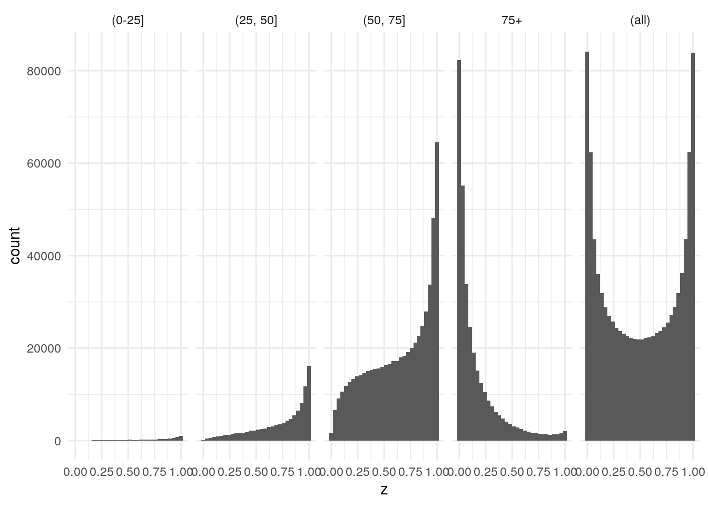
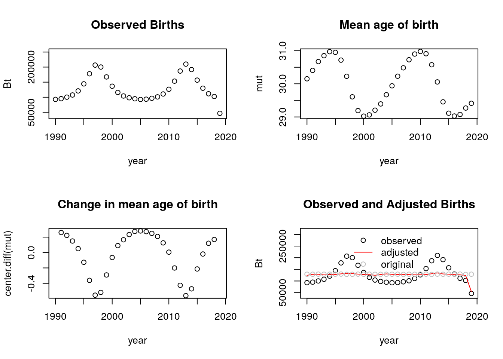
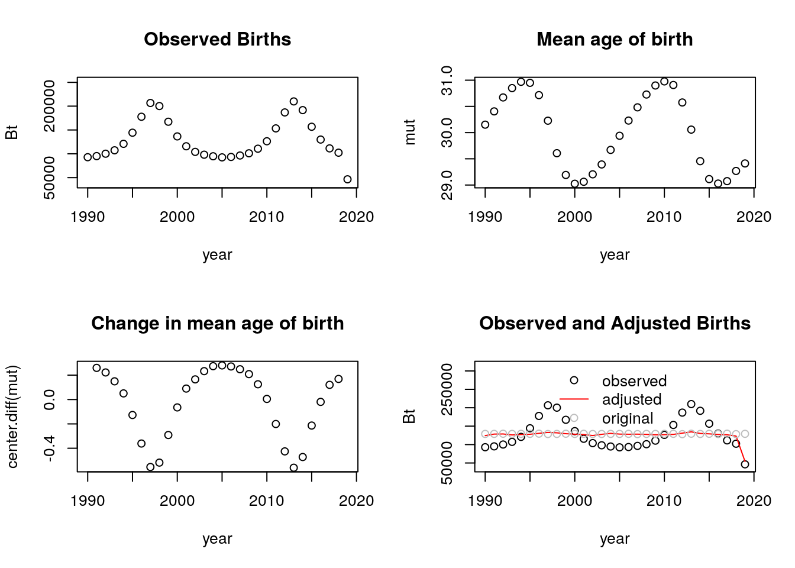

Problem sets and solutions
2020-06-28
Special thank you to the Spring 2020 Mathematical Demography students for the problem set answers.
Chapter 1 Problem set 1
1.1 Questions
True or False? “If every part grows exponentially at its own rate, then the whole will also grow exponentially.” Explain your answer briefly.
List what you think are two of the best arguments in favor of doing a disaggregated projection? What are two of the best arguments in favor of doing an aggregated projection?
Let there be two countries: USA (\(u\)) and Mexico (\(m\)). Assume that in 1970, their population size (in millions) is \(K_u(1970) = 200\), \(K_m(1970) = 50\) and that their growth rates are \(r_u = .0075\) and \(r_m = 0.035\), respectively. Project the first few years and verify that the rate of change in the aggregate growth rate equals the variance of the growth rate. Does it matter what time points and period you consider?
- Using the information from question 3, notice that the growth rate changes over the course of the 50 years, but there is a constant growth rate that will produce the exact same population after 50 years. A reasonable choice of the constant growth rate to apply is the value of the changing growth rate at year 25 (half-way through the period). We can estimate this using a Taylor series approximation: \[ \bar{r}(25) \approx \bar{r}(0) + 25\bar{r}'(0) + (25)^2 \bar{r}''(0) \]
- Show that \(\bar{r}''(t) = \bar{r}_3(t) - \bar{r}_2(t) \bar{r}(t) - 2 \bar{r}(t) \sigma^2_r(t)\) \
- Calculate the combined US-Mexico population after 50 years according to the following five (5) methods, plot the total population after 50 years according to these 5 methods on a graph.
- Dissaggregated (“true”) forecast, with each country growing at its own rate
- Aggregated forecast, pretending it’s one country, growing at \(\bar{r}(0)\)) for 50 years
- Aggregated forecast, growing at the “true” value of \(\bar{r}(25)\) for the whole period. (Use the value of \(\bar{r}(25)\)) that you calculate from the disaggregated forecast)
- Aggregated forecast, growing at the first-order Taylor series estimate of \(\bar{r}(25)\) for the whole period
- Aggregated forecast, growing at the second-order Taylor series estimate of \(\bar{r}(25)\) for the whole period
- For Ken’s Poisson-Exponential model,
- What is the closed-form expression for \(\hat{r}(t)\)
- What is the variance of the growth rate?
- Write down an expression for the distortion index. What variables and parameters in the model does it depend on? Are there any variables or parameters that it doesn’t depend on? (difference of \(\bar{r}(t)\) and \(\bar{r}(0)\))
- What is the closed-form expression for \(\hat{r}(t)\)
1.2 Solutions
True or False? “If every part grows exponentially at its own rate, then the whole will also grow exponentially.” Explain your answer briefly. False.
From Keyfitz we know that the average growth rate of a heterogeneous population is: \[\bar{r}(t)=\frac{\sum_i{Q_i}{r_i}e^{r_i{t}}}{\sum_i{Q_i}e^{r_i{t}}}\] Here, \(\bar{r}(t)\) is not constant for all t as there is a compositional effect. This should be read as “If every part grows at a constant exponential rate, then the whole will also grow exponentially”. We could argue that only in the long term it is true.- List what you think are two of the best arguments in favor of doing a disaggregated projection? What are two of the best arguments in favor of doing an aggregated projection?
- Disaggregated projections:
- Reveal the “true” path, patterns of individuals different from that of the aggregate.
- Take into account size of each sub-population, in particular the smaller ones.
- Are more precise. Growth rates for sub-populations reflect their intrinsic characteristics, such that projections that do not use appropriate rates can lead to adverse social/policy implications.
- Reveal the “true” path, patterns of individuals different from that of the aggregate.
- Aggregated projections:
- May used if a population is homogeneous rather than projecting many models for sub-populations.
- Provide a straightforward method of obtaining overall rates rather than the group-specific rates.
- Are easier to implement as more data available.
- May used if a population is homogeneous rather than projecting many models for sub-populations.
- Disaggregated projections:
There are two countries, \(u\) and \(m\), each with growth rates \(r_u = .0075\), \(r_m = 0.035\), and population sizes in 1970 of \(K_u(1970) = 200\), \(K_m(1970) = 50\). Use the first few years of the projection to verify that rate of change in the aggregate growth rate equals the variance of the growth rate. Does it matter what time points and period you consider?
From the information given, we can obtain \(\bar{r}(t)\) and \(\sigma_r^2(t)\) by projecting each country’s population using individual rates and then obtaining the total population, \[\bar{K}(t)= \sum_{i\in\{u,m\}}K_{i}(t) = \sum_{i\in\{u,m\}}K_{i}e^{r_{i} t}\] Applying the formula for aggregate growth rate to the USA-Mexico case we get: \[\begin{aligned} \bar{r}(t) & = \frac{\frac{d}{dt}\bar{K}(t)}{\bar{K}(t)}\\ & = \frac{K_u(0) r_u(t) e^{r_u(t) t} + K_m(0) r_m(t) e^{r_m(t) t}}{K_u(0) e^{r_u(t) t} + K_m(0) e^{r_m (t) t}} \end{aligned}\] For simplicity, time 0 is the year 1970 such that the proyection goes from 1971 (t=1) until 2020 (t=50).
Then, we can calculate the variance of the growth rates as: \[\begin{aligned} \sigma_r^2(t) &= \frac{{K_u(0) e^{r_u(t) t}(r_u(t) - \bar{r}(t))^2 + K_m(0) e^{r_m(t) t}(r_m(t) - \bar{r}(t))^2}} { {K_u(0) e^{r_u(t) t} + K_m(0) e^{r_m(t) t}}} \\ &= \frac{K_u(t) r_u(t)^2 + K_m(t) r_u(t)^2}{K_u(t)+K_m(t)}-\bar{r}(t)^2 \end{aligned}\] The table below show these results for projections at the beginning and ending of a 50 year period. Overall, the time points do not matter and we can verify that \(\frac{d\bar{r}(t)}{d(t)}=\sigma_r^2(t)\)\(t\) \(\sigma^2_r(t)\) \(K_u(t)\) \(K_m(t)\) \(\bar{K}(t)\) \(\bar{K}(t)-\bar{K}(t-1)\) \(\bar{r}(t)\) \(\bar{r}'(t)\) 0 0.00021 200 50 250 l 0.000123 201.506 51.781 253.287 3.2866 0.0131 2 0.000125 203.023 53.625 256.648 3.3614 0.0132 0.0001 3 0.000127 204.551 55.536 260.087 3.4385 0.0133 0.0001 \(\vdots\) \(\vdots\) \(\vdots\) \(\vdots\) \(\vdots\) \(\vdots\) \(\vdots\) \(\vdots\) 49 0.000189 288.824 277.833 566.658 50 0.000189 290.998 287.730 578.728 12.071 0.0211 51 0.000189 293.189 297.979 591.168 12.440 0.0213 0.0002 - Using the information from question 3, notice that the growth rate changes over the course of the 50 years, but there is a constant growth rate that will produce the exact same population after 50 years. A reasonable choice of the constant growth rate to apply is the value of the changing growth rate at year 25 (half-way through the period). We can estimate this using a Taylor series approximation: \[ \bar{r}(25) \approx \bar{r}(0) + 25\bar{r}'(0) + (25)^2 \bar{r}''(0) \]
- Show that \(\bar{r}''(t) = \bar{r}_3(t) - \bar{r}_2(t) \bar{r}(t) - 2 \bar{r}(t) \sigma^2_r(t)\)
From before, we know that for \(i\in\{u,m\}\): \[\begin{aligned} \sigma_r^2(t) &= \bar{r}'(t) \\ & = \frac{d}{dt}\left[ \frac{ \sum K_i r_i e^{r_i t}} {\sum K_i e^{r_i t}} \right]\\ & = \frac{\sum K_i(0)r_i^2e^{r_it}} {\sum K_i(0)e^{r_it}} - \left(\frac{ \sum K_i(0)r_ie^{r_it}} {\sum K_i(0)e^{r_it}}\right)^2 \\ & = \frac{\sum K_i(0)r_i^2e^{r_it}} {\sum K_i(0)e^{r_it}} - \bar{r}^2(t) \end{aligned}\] Then, we take the second derivative of the growth rate by using the quotient rule \(\left(\frac{u}{v}\right)'= \frac{u'v-vu'}{v^2}\): \[\begin{aligned} \bar{r}''(t) &= { \frac{\left(\sum K_i(0)e^{r_it}\right)(\sum K_i(0)r_i^3e^{r_it}) -(\sum K_i(0)r_i^2e^{r_it})(\sum K_i(0)r_i e^{r_it})} {(\sum K_i(0)e^{r_it})^2 }} - 2\bar{r}(t)\times\bar{r}'(t)\\ &= \frac{ \sum K_i(0)r_i^3e^{r_it}} {\sum K_i(0)e^{r_it} } - \frac{ \sum K_i(0)r_i^2e^{r_it}} {\sum K_i(0)e^{r_it}}\times \frac{\sum K_i(0)r_i e^{r_it}}{\sum K_i(0)e^{r_it} } - 2\bar{r}(t)\sigma^2_r(t) \\ &= \bar{r}_3 (t) - \bar{r}_2(t)\bar{r}(t) - 2\bar{r}(t)\sigma^2_r(t) \end{aligned}\] where \(\bar{r}_n\) is the \(n\)th moment of \(\bar{r}(t)\), and it is known that \(\bar{r}'(t) = \sigma^2_r(t)\).
- Calculate the combined US-Mexico population after 50 years according to the following five (5) methods, plot the total population after 50 years according to these 5 methods on a graph.
For the following exercises, the population is in millions.
- Dissaggregated (“true”) forecast, with each country growing at its own rate:
\[\begin{aligned} \bar{K}(2020) &= K_u(2020) + K_m(2020)\\ &=K_u(1970) e^{(2020-1970)r_u} + K_m(1970) e^{(2020-1970)r_m}\\ &=200e^{.0075\times 50} + 50e^{.035\times 50}\\ &= 578.728 \end{aligned}\]
- Aggregated forecast, pretending it’s one country, growing at \(\bar{r}(0)\)) for 50 years:
\[\begin{aligned} \overline{r}(1970) &= \frac{\sum K_i(1970)r_i e^{r_i (1970-1970)}} {\sum K_i(1970)e^{r_i (1970-1970) }}\\ &=\frac{K_u(1970)r_u + K_m(1970)r_m }{K_u(1970) + K_m(1970) }\\ & = \frac{ 200\times .0075 + 50\times.035} {200+50 } = 0.013 \end{aligned}\] \[\begin{aligned} \bar{K}(2020) &= \bar{K}(1970)e^{\bar{r}(1970) (2020-1970)}\\ &= 250 e^{.013\times 50} \approx 478.8852 \end{aligned}\]
- Aggregated forecast, growing at the “true” value of \(\bar{r}(25)\) for the whole period. (Use the value of \(\bar{r}(25)\)) that you calculate from the disaggregated forecast):
Translating \(\bar{r}(25)\) onto the 1970 timeline, we should look at \(\bar{r}(1995)\)
\[\begin{aligned}
\bar{r}(1995) &= \sum K_i(1970)r_i e^{r_i (1995-1970)} \over \sum K_i(1970)e^{r_i (1995-1970) }\\
& = \frac{K_u(1970)r_u e^{r_u (25)} + K_m(1970)r_m e^{r_m (25)} }{K_u(1970)e^{r_u (25)} + K_m(1970)e^{r_m (25)} }\\
& =\frac{200\times.0075 e^{.0075\left(25\right)}+50\times.035 e^{.035\left(25\right)}}{200 e^{.0075\left(25\right)}+50 e^{.035\left(25\right)}} \approx 0.0176632\\
\bar{K}(2020) &= 250e^{0.016632(50)} \approx 574.25316
\end{aligned}\]
- Aggregated forecast, growing at the first-order Taylor series estimate of \(\bar{r}(25)\) for the whole period:
\[\begin{aligned} \sigma^2_r(1970) &= \frac{K_u(1970)r_u^2 + K_m(1970)r_m^2} {K_u(1970) + K_m(1970)} - \bar{r}^2(0) \\ & = \frac{(200)(0.0075)^2 + (50)(0.035)^2}{250}-(0.013)^2 \\ & = 0.000121 \\ \hat{\bar{r}}(1995) & \approx \bar{r}(1970) + 25\sigma^2_r(1970) = 0.016025 \\ \bar{K}(2020) &= 250 e^{0.016025(50)} \approx 557.0811485 \end{aligned}\]
- Aggregated forecast, growing at the second-order Taylor series estimate of \(\bar{r}(25)\) for the whole period:
For this exercise we need to first calculate the extra second-order term from the Taylor series, \(25^2\bar{r}''(0)\):
\[\begin{aligned} \bar{r}''(1970) &= \frac{200(0.0075)^3+50(0.035)^3}{250} - \frac{200(0.0075)^2+50(0.035)^2}{250} \times (0.013) - 2(0.013)(0.000121)\\ \hat{\bar{r}}(1995) & \approx \bar{r}(1970) + 25\sigma^2_r(1970) +(25)^2\bar{r}''(1970) \\ & = 0.01664891\\ \bar{K}(2020) &= 250 e^{0.01664891(50)} \\ & \approx 574.73337 \\ \end{aligned}\]
- Graphs
There are many methods to project populations.

- Dissaggregated (“true”) forecast, with each country growing at its own rate:
- Show that \(\bar{r}''(t) = \bar{r}_3(t) - \bar{r}_2(t) \bar{r}(t) - 2 \bar{r}(t) \sigma^2_r(t)\)
- For Ken’s Poisson-Exponential model,
- What is the closed-form expression for \(\hat{r}(t)\)
\[\begin{aligned} \hat{r}(t) &= \frac{d}{dt}log(\hat{k})\\ &= r_0 - \alpha \lambda e^{-\alpha t} \end{aligned}\] - What is the variance of the growth rate?
The variance of the growth rate is \(\sigma_r^2(t)\): \[\bar{r}'(t)= \sigma^2_r(t) = \alpha^2\lambda e^{-\alpha t}\] - Write down an expression for the distortion index. What variables and parameters in the model does it depend on? Are there any variables or parameters that it doesn’t depend on? (difference of \(\bar{r}(t)\) and \(\bar{r}(0)\))
Distortion index: \[\begin{aligned} \bar{r}(t) - \bar{r}(0) & = r_0 - \lambda \alpha e^{-\alpha t} - (r_0 - \lambda \alpha e^{0}) \\ & = \lambda \alpha - \lambda \alpha e^{-\alpha t}\\ & = \lambda \alpha(1-e^{-\alpha t}) \end{aligned}\] Depends on \(\lambda\), \(\alpha\), \(t\), but not \(r_0\) or \(s\). That is, it depends on the the gap between growth rates, the relative population sizes, fastest growth rate, the poisson distribution parameter, but not the poisson distributed integers.
- What is the closed-form expression for \(\hat{r}(t)\)
Chapter 2 Problem set 2
2.1 Questions
True/False: The variance of the population distribution of deaths will always be larger than that of the baseline. Explain your answer briefly.
Use the fraily simulator to produce plots of the uniform, gamma, and U-shaped beta distribution. Describe in a sentence, each, how the population hazard behaves at older ages.
Does the behavior of the uniform at older ages look like a population with two (proportional) sub-groups? What do you think is driving this? (This is an open-ended question. You should feel free to use mathematics, intuition, or any other approach to answer.)
Does the behavior of the beta at older ages look like the gamma at older ages? What do you think is driving this? (Also open ended)
At what age do population hazards start to diverge from the baseline in the the three models? Is it fair to say that half the cohort has to have died before unobserved heterogeneity plays a role?
Extend the simulation code to include life expectancy at age x (Shown above.)
Extend the simulation code to include the average frailty of the surviving at age x, z(x). (Note: this requires some more difficulty programming, and I would recommend keeping your N fairly small.)
Extend the simulation code to histograms of frailty of survivors at different ages. Does the uniform stay uniform? How about the other distributions?
Use the method of completing the gamma to get the mean of the gamma distribution. (Hint: I believe there are youtube examples of this).
Derive V&M equation 13, extending Keyfitz’s result. Did your derivation require you to assume proportional hazards; if so, where?
Derive V&M equation 20, extending Keyfitz’s result to proportional changes in the population hazard. Did your derivation require you to assume proportional hazards; if so, where?
Describe a strategy for simulating cross-overs in the aggregate hazards of two groups, which have baseline hazards that don’t cross. If you want, write code and produce a plot.
2.2 Solutions
- True/False: The variance of the population distribution of deaths will always be larger than that of the baseline. Explain your answer briefly.
True.
If each individual has their own hazard schedule proportional to baseline \(z\), there will be more variation in the distribution of deaths than if each person had the baseline case. The variation for homogeneous populations comes from to chance only, while the variation for heterogeneous populations comes from chance and group variation in risk. Therefore, the variance of the population distribution of deaths will always be larger than that of the baseline (unless the variance is 0).
Use the fraily simulator code to produce plots of the uniform, gamma, and U-shaped beta distribution. Describe in a sentence, each, how the population hazard behaves at older ages.
For simplicity, we take the code and convert it into a function that can use frailty draws from different distributions. We also extend it to include life expectancy calculation.source("functions/gomp_funs.R") frailty_sim <- function( N, z, base.a, base.b ){ ## (1) simulate ages at death from h0*z using the gompertz as our baseline## ## note: we call the continuous ages of death "y" ## but we'll make a table of deaths at age "x" and ## using life table notation call the count "Dx" y <- rgomp(N, b = base.b, ## doesn't vary a = base.a * z) ## multiplicative fixed frailty ## (2) Lifetables: first define age at death as floor(y) and then ## make a table of deaths at each age ("Dx") Dx <- get.Dx(y) x <- as.numeric(names(Dx)) lx <- rev(cumsum(rev(Dx))) ## lx by reverse-survival lxpn <- c(lx[-1], 0) ## Person-years as average of adjacent lx Lx <- (lx + lxpn)/2 mx <- Dx/Lx ## Hazards Tx <- rev(cumsum(rev(Lx))) ## Remaining person-years ex <- Tx/lx ## Life expectancy at age x ## Baseline lifetable lx.base <- N * (1- pgomp(x, b = base.b, a = base.a)) Dx.base <- round(-diff(c(lx.base,0))) mx.base <- base.a * exp(base.b * (x + .5)) ## x + .5 lxpn.base <- c(lx.base[-1], 0) Lx.base <- (lx.base + lxpn.base)/2 Tx.base <- rev(cumsum(rev(Lx.base))) ex.base <- Tx.base/lx.base # exported tables lifetables <- list() lifetables$sim <- y lifetables$z <- z lifetables$baseline <- tibble(Dx.base, lx.base,lxpn.base, Lx.base, mx.base, Tx.base, ex.base) lifetables$frailty <- tibble(x,Dx, lx,lxpn, Lx, mx, Tx, ex) return(lifetables) }- Uniform distribution:
We find that the uniform-distributed frailty begins to increase more slowly after age 60 compared to baseline.
# Parameters million = 10^6 N <- million base.a <- 10^-4 base.b <- 1/9 set.seed(1047) # for reproducibility #Uniform distribution w <- .3 ## try smaller if you want z <- runif(N, min = 1 - w , max = 1 + w) uniform_frailty <- frailty_sim(N, z, base.a, base.b)
Figure 2.1: Uniform Distribution
- Gamma frailty distribution:
Gamma-distributed frailty begins to increase more slowly after age 60 compared to baseline.This is similar to the uniform frailty distribution.
# Parameters million = 10^6 N <- million base.a <- 10^-4 base.b <- 1/9 set.seed(1047) # for reproducibility #Gamma distribution my.sd <- .5 sigma.sq <- my.sd^2 z <- rgamma(N, shape = 1/sigma.sq, scale = sigma.sq) gamma_frailty <- frailty_sim(N, z, base.a, base.b)
Figure 2.2: Gamma Distribution
- Beta frailty distribution:
Beta-distributed frailty begins to increase more slowly after age 60 compared to baseline and eventually stops increasing at age 100.
# Parameters million = 10^6 N <- million base.a <- 10^-4 base.b <- 1/9 set.seed(1047) # for reproducibility #Beta distribution z <- rbeta(N, shape1 = .5, shape2 = .5) beta_frailty <- frailty_sim(N, z, base.a, base.b)
Figure 2.3: Beta Distribution
- Uniform distribution:
- Does the behavior of the uniform at older ages look like a population with two (proportional) sub-groups? What do you think is driving this?
It doesn’t look like two proportional subgroups. It looks like the frailty is drawn from a single distribution.
- Does the behavior of the beta at older ages look like the gamma at older ages? What do you think is driving this?
The behavior is somewhat similar, as the hazards are increasing more slowly at older ages. However, the beta hazards stops increasing at a certain point. The uniform and the gamma are more similar. For the parameters we used, beta-distributed frailty generates many very-frail or very-robust individuals and fewer medium-frail individuals. Gamma-distributed frailty generates many medium-frail individuals but fewer very-frail or very-robust individuals.
- At what age do population hazards start to diverge from the baseline in the the three models? Is it fair to say that half the cohort has to have died before unobserved heterogeneity plays a role?
Generally around age 65, but if frailty is beta distributed (with our set of parameters) then we observe a divergence earlier. For the gamma and uniform frailty models roughly half the cohort has to die before unobserved heterogeneity plays a role, but for the beta model we observe divergence in the survival curve much earlier.
Extend the simulation code to include life expectancy at age x.
Within the frailty function, we include the steps to calculate life expectancy. We also limit the ages up to 100 for each simulation, to avoid extreme and non-realistic results. This is particularly relevant for the beta frailty distribution which leads to ages above 110 to be sampled.
Figure 2.4: Life expectancy comparison
Extend the simulation code to include the average frailty of the surviving at age x, z(x). (Note: this requires some more difficulty programming, and I would recommend keeping your N fairly small.)

Figure 2.5: Uniform Hazards Average Frailty

Figure 2.6: Gamma Hazards Average Frailty

Figure 2.7: Beta Hazards Average Frailty
- Extend the simulation code to histograms of frailty of survivors at different ages. Does the uniform stay uniform? How about the other distributions?
The uniform does not remain uniform. This matches our intuition that people with higher frailty will die off first. This leaves an exponentially decreasing distribution of frailty for survivors age 75+. The gamma remains a gamma but the parameters change. The beta, similar to the uniform, does not remain beta. There is an exponentially decreasing distribution of frailty for survivors age 75+.
Figure 2.8: Uniform Hazards Frailty

Figure 2.9: Gamma Hazards Frailty
Figure 2.10: Beta Hazards Frailty
- Use the method of completing the gamma to get the mean of the gamma distribution.
\[\begin{aligned} \mu & = \int_0^{\infty} \frac{1}{\Gamma(k) \lambda^k} z^{k - 1} e^{-\frac{z}{\lambda}} \\ & = \frac{\Gamma(k+1) \lambda^{k+1}}{\Gamma(k+1) \lambda^{k+1}} \cdot \int_0^{\infty} \frac{1}{\Gamma(k) \lambda^k} z^{k - 1} e^{-\frac{z}{\lambda}} \\ & = \frac{\Gamma(k+1) \lambda^{k+1}}{\Gamma(k) \lambda^{k}} \cdot \int_0^{\infty} \frac{1}{\Gamma(k+1) \lambda^{k+1}} z^{k - 1} e^{-\frac{z}{\lambda}} \\ & = k \lambda \cdot 1 \\ & = k \lambda \end{aligned}\] - Derive V&M equation 13, extending Keyfitz’s result. Did your derivation require you to assume proportional hazards; if so, where?
- Derive V&M equation 20, extending Keyfitz’s result to proportional changes in the population hazard. Did your derivation require you to assume proportional hazards; if so, where?
- Describe a strategy for simulating cross-overs in the aggregate hazards of two groups, which have baseline hazards that don’t cross. If you want, write code and produce a plot.
Chapter 3 Problem set 3
3.1 Questions
- Under gamma frailty, we obtained an explicit expression for average frailty by age for any baseline hazard schedule. \[ \bar{z}=\frac{1}{1+\sigma^2 H_0(x)}\] Assume baseline mortality is Gompertz (say with a = \(10^{-4}\) and b = 1/12). Try a couple of different values of \(\sigma^2\) (but make sure one of these values is 1/7 for comparability with the next problem). Describe what happens to average frailty at older ages. Does it decrease exponentially? If so, is there an age at which the rate of decrease equals (or at least comes very close to) the exponential rate of increase in baseline hazards b? Does this age depend on \(\sigma^2\)?
- Obtain from the Human Mortality Database a schedule of single-year-of-age, cohort mortality rates for females born in 1880 in Italy. Use the “inversion formula” for the gamma distribution to obtain the baseline hazards implied by \(\sigma^2= 1/7\). Plot the observed and implied baseline schedule. Plot the average frailty by age. Do your results resemble or differ from the Gompertz case above ?
- Derive V&M ’s result (5E):\[\overline{R}(x) \equiv \frac{\bar{\mu}_2(x)}{\bar{\mu}_1(x)} = \frac{R + R \sigma_1^2 H_1(x)}{1 + R \sigma_2^2 H_1(x)} \]
- Use mathematics to say what the determinants of the age of crossover are in terms of the respective frailty variances, R, and a baseline Gompertz schedule.
- Simulate this cross over with two proportional Gompertz schedules, with different frailty variances. Can you get a cross-over? If so, does it occur when cumulative hazard satisfy the condition (in small font) at the end of 5E?
- Use simulation to say what the determinants of the age of crossover are in terms of the respective frailty variances, R, and the baseline Gompertz schedule.
- Get two Italian cohorts 20 years apart and calculate the rate of mortality improvement by age \(\rho(x)\) that you observe and that which you would have observed had there been no frailty. For frailty, assume gamma-distributed with \(\sigma^2 = 1/5\).
- Extend the CenSoc demonstration of changing characteristics with age in at least one of the following ways
- Use years of education instead of wage income.
- Use both years of education and wage income.
- Analyze Blacks and Whites separately using wage income? Is the variance of “observed heterogeneity” (\(\hat{z}_{obs}\)) larger for one group. Discuss briefly.
3.2 Solutions
- Under gamma frailty, we obtained an explicit expression for average frailty by age for any baseline hazard schedule. \[ \bar{z}=\frac{1}{1+\sigma^2 H_0(x)}\] Assume baseline mortality is Gompertz (say with a = \(10^{-4}\) and b = 1/12). Try a couple of different values of \(\sigma^2\) (but make sure one of these values is 1/7 for comparability with the next problem). Describe what happens to average frailty at older ages. Does it decrease exponentially? If so, is there an age at which the rate of decrease equals (or at least comes very close to) the exponential rate of increase in baseline hazards \(b\)? Does this age depend on \(\sigma^2\)?
Let \(H_0\) be a gompertz curve with parameters a = \(10^{-4}\) and b = 1/12. The average frailty over age depends on the level of \(\sigma^2\) as seen by the left handside graph. As \(\sigma^2\) increases, average fraily decreases at an exponential rate at earlier ages. That is, when \(\sigma^2\) is very large (ie, 50) the exponential decrease begins almost instantly. However, with a very small \(\sigma^2\) of 0.01 the average frailty is almost constant except at older ages. Therefore \(\sigma^2\) determines when average frailty starts to decrease.
The graph on the right shows the derivative over ages of each of the average frailty curves as well as the \(b\) parameter of the baseline Gompertz mortality (in blue). Regardless of the the value of \(\sigma^2\), none of the derivatives are close enough to equal the \(b\) parameter.Analytically, the derivative of average frailty is always going to be negative and very small. \[\frac{d}{dx}\bar{z}= -\sigma^2ae^{bx}\bar{z}(x)^2\].

Figure 3.1: Average frailty by age
- Obtain from the Human Mortality Database a schedule of single-year-of-age, cohort mortality rates for females born in 1880 in Italy. Use the “inversion formula” for the gamma distribution to obtain the baseline hazards implied by \(\sigma^2= 1/7\). Plot the observed and implied baseline schedule. Plot the average frailty by age. Do your results resemble or differ from the Gompertz case above ?
In order to get the baseline hazards implied by \(\sigma^2\) = 1/7, we can use the inversion formula \[\mu_0 (x) = \bar{\mu}(x)e^{\sigma^2\bar{H}(x)}\]
Taking logs, this gives us \[log(\mu_0 (x)) = log(\bar{\mu}(x))+{\sigma^2log(\bar{H}(x))}\]
\(H(x)\) is equal to the summation of \(\mu(x)\) in continuous time, so we can take the cumulative sum of these mortality rates to get the cumulative hazards. We can then use this to calculate the baseline hazards schedule.
Now let’s plot average frailty by age. While the shape of the mean frailty graph is the same in both cases, average frailty seems to decline more rapidly here than in the Gompertz case (this is driven by early ages.)
Figure 3.2: Observed and implied hazards

Figure 3.3: Observed and implied hazards
- Derive V&M ’s result (5E)
Since \(\mu_2(x) = R\mu_1(x)\) and frailty is distributed gamma with variances \(\sigma_1^2\) and \(\sigma_2^2\), respectively, we can rewrite \[\bar{R}(x) = \frac{\bar{\mu_2}(x)}{\bar{\mu_1(x)}}\] as
\[\begin{aligned} \bar{R}(x) & = {\mu_2(x) \over 1+\sigma^2_2H_2(x)} \times{1+H_1(x)\sigma^2_1 \over \mu_1(x)} \\ & = { \bar{\mu}_2(x) \over \bar{\mu}_1(x) }\times { 1+H_1(x)\sigma^2_1 \over 1+H_2(x)\sigma^2_2 } \end{aligned}\] Since \(H_2 = R*H_1\), \[\begin{aligned} & = {R} \times { 1+\sigma^2_1 H_1(x) \over 1+R\sigma^2_2 H_1(x) }\\ & = { R+R\sigma^2_1 H_1(x) \over 1+R\sigma^2_2 H_1(x) } \end{aligned}\] - Use mathematics to say what the determinants of the age of crossover are in terms of the respective frailty variances, R, and a baseline Gompertz schedule.
The age crossover occurs at \(\bar{u_1} = \bar{u_2}\), which occurs at \(\bar{R} = 1\). Rearranging 5E after equating it to 1 gives us \[1+R\sigma_2^2(H_1(x_c)) = R+R\sigma_1^2(H_1(x_c))\] \[H_1(x_c)(R\sigma_1^2 - R\sigma_2^2) = 1-R\] \[H_1(x_c) = { R -1 \over R(\sigma_2^2 - \sigma_1^2)}\] Assuming a baseline hazard schedule \(H_1(x)\) that is Gompertzian, we can solve to get the age of crossover \(x_c\). \[ \begin{aligned} {a \over b}(e^{bx_c} -1) & = { R -1 \over R(\sigma_2^2 - \sigma_1^2)} \\ x_c & = {1 \over b} \log \bigg({ {(b/a)(R-1)}\over R(\sigma^2_2-\sigma^2_1)} +1\bigg) \end{aligned}\] Simulate this cross over with two proportional Gompertz schedules, with different frailty variances. Can you get a cross-over? If so, does it occur when cumulative hazard satisfy the condition (in small font) at the end of 5E?
Now we can graph this to observe the crossover. In Problem 4, we calculate an age where this crossover would occur based on 5E, and here, graphing that line in grey, we see that the crossover occurs at exactly that point.
We borrow the frailty simulation function from problem set 2 and use it to create two schedules with Gamma frailty distributions (with different variances) and where the scales of the gompertz curves are proportional.

Figure 3.4: Mortality crossover
Use simulation to say what the determinants of the age of crossover are in terms of the respective frailty variances, R, and the baseline Gompertz schedule.
If we alter any of the parameters here, it would change the age of crossover in accordance with that observed in Problem 4. We can simulate this by writing the previous code as a function and running it with different parameters.Now let’s run this for different values of alpha, beta, R, and the two variances. In the first set of graphs, changing the two variances to compare when they are very different and when they are very similar. Age of crossover does not seem to change very much.get.crossover.plot <- function( N, sigmasq.1.fun, sigmasq.2.fun, beta.fun, alpha.fun, R.fun) { #Now let's generate the zs for this using the rgamma function. z1.fun <- rgamma(N, shape = 1/sigmasq.1, scale = sigmasq.1) z2.fun <- rgamma(N, shape = 1/sigmasq.2, scale = sigmasq.2) #Since these are proportional Gompertzian schedules, they will have the same b but different alphas, scaled by R #We can use the frailty simulation function from now onwards schedule1 <- frailty_sim(N, z1.fun, base.a = alpha.fun, base.b =beta.fun) schedule2 <- frailty_sim(N, z2.fun, base.a = R*alpha.fun, base.b =beta.fun) #Crossover plots plot(schedule1$frailty$x, log(schedule1$frailty$mx), type = "l", lty = 1, lwd = 2, col = "black", xlab = "Age", ylab = "log hx") lines(schedule2$frailty$x, log(schedule2$frailty$mx), type = "l", col = "red", lty = 1, lwd = 2) legend("topleft", title = "Variance", legend = c(sigmasq.1.fun, sigmasq.2.fun ), col = c("black", "red"), lwd = 2,lty = 1) mtext(paste0("R= ", R.fun," Base a = ", alpha.fun, " Base b = ", round(beta.fun,2) ), side=3) }
Then, when changing alpha so that we can compare a very small alpha with a large one, a crossover occurs earlier with a larger value.
Figure 3.5: Crossover: changing variances
By changing beta to compare a very small beta and a large one, we get a crossover very early with a large beta.
Figure 3.6: Crossover: changing Gompertz \(a\) parameter
Finally, if we compare a large and small r, there does not seem to be a difference in the crossover ages.
Figure 3.7: Crossover: changing Gompertz \(b\) parameter

Figure 3.8: Crossover: changing \(R\)
Get two Italian cohorts 20 years apart and calculate the rate of mortality improvement by age \(\rho(x)\) that you observe and that which you would have observed had there been no frailty. For frailty, assume gamma-distributed with \(\sigma^2 = 1/5\).
The observed rate of mortality improvement can be calculated using \[ \bar{\rho}(x,t) = - {1 \over t} \log {m_{t2}(x) \over m_{t1}(x) }\] and the version with frailty can be calculated using: \[ \rho(x,t) = \bar{\rho}(x,t) + \sigma^2\ {d \over dt}\bar{S}_c (x,t) \] Now we can calculate the rates of improvement in mortality and compare them. When we assume frailty, we get a higher rate of improvement at the older ages than in the observed case.
We obtain the Italian cohort female lifetable (1x1) from the Human Mortality Database (HMD).

Figure 3.9: Mortality improvement
- Extend the CenSoc demonstration of changing characteristics with age in at least one of the following ways
- Use years of education instead of wage income.
- Use both years of education and wage income.
Analyze Blacks and Whites separately using wage income? Is the variance of “observed heterogeneity” (\(\hat{z}_{obs}\)) larger for one group. Discuss briefly.
Let’s see how this changes for education.
- Use years of education instead of wage income.
## NULL## NULL b. The easiest way to compare both income and education is to compare income (on the y-axis) while letting education vary. For simplicity we took 4 education bins: 0-5 years, 5-10 years, 10-15 years and more than 15 years: as well as their standardized analoges. The intensity of colors increases with the number of years of education.
b. The easiest way to compare both income and education is to compare income (on the y-axis) while letting education vary. For simplicity we took 4 education bins: 0-5 years, 5-10 years, 10-15 years and more than 15 years: as well as their standardized analoges. The intensity of colors increases with the number of years of education.
 c. We’ll run the wage income comparison for Blacks and Whites separately.
c. We’ll run the wage income comparison for Blacks and Whites separately.
Now let's graph these two. We can see a decline in log wages with age for Blacks that we do not observe for Whites, for whom this tends to increase by age. This suggests that we may observe greater variance in heterogeneity for blacks than for Whites. 

Chapter 4 Problem set 6
4.1 Questions
- Using the tempo_simu.R file,
- Try with N of 4 million – does it still work? What happens?
- Try with a shift function that goes up and down. Are the adjusted counts ever LESS than the observed counts? If so, when?
- If the cumulative shift was Rt = a + 0.1*t, what would be a formula for tempo-adjusted counts of births? Sketch the 4 panels without the computer and then check to see if you’re right.
- Calculate the age profile of fertility change predicted by the BongaartsFeeney model by taking time derivatives of the log schedules. You will end up with three terms. Describe each of these in words.
- Use simulation based on tempo simu.R to check your answer.
- Is there a diagnostic plot that you could do to compare observed agespecific changes to those predicted by the BF model? Hint: use normalized schedules that sum to 1.0
- Use this diagnostic plot to all-order fertility change during the Great Recession.
- Use this diagnostic plot to 1st, 2nd, and 3rd births.
- Fit the two-part normal mixture model to fertility from another country based on what looks interesting in the Burkimsher paper. (E.g., Canada, Portugal, or the Netherlands). I recommend doing this for 1 year, but once you get your code running, you could iterate over years. Use graphs to discuss the goodness of fit. And if you do more than 1 year, discuss whether the time trends in the parameters make substantive sense)
4.2 Solutions
- Using the tempo_simu.R file,
- Try with N of 4 million – does it still work? What happens?
This simulation will first sample from a normal distribution draws of ages that represent the ages of women when giving birth for the first time. It also creates as shift function \(R(t)\) which affects all women of a given year.

 Yes, it still works. In fact, we see that the adjusted births are very close to the observed births when using this number of simulations. (I continue to use an N of 4 million for the rest of this problem).
Yes, it still works. In fact, we see that the adjusted births are very close to the observed births when using this number of simulations. (I continue to use an N of 4 million for the rest of this problem).
- Try with a shift function that goes up and down. Are the adjusted counts ever LESS than the observed counts? If so, when?
 
The adjusted counts are not always less than the observed. Naturally, this only happens when we have spikes on the observed counts that become smoother after the adjusting of the birth counts.

The adjusted counts are not always less than the observed. Naturally, this only happens when we have spikes on the observed counts that become smoother after the adjusting of the birth counts.
- If the cumulative shift was Rt = a + 0.1*t, what would be a formula for tempo-adjusted counts of births? Sketch the 4 panels without the computer and then check to see if you’re right.
Let \(a = -199\), so we get a shift of 0 to about 3 years depending on the time period:


- Try with N of 4 million – does it still work? What happens?
This simulation will first sample from a normal distribution draws of ages that represent the ages of women when giving birth for the first time. It also creates as shift function \(R(t)\) which affects all women of a given year.
- Calculate the age profile of fertility change predicted by the BongaartsFeeney model by taking time derivatives of the log schedules. You will end up with three terms. Describe each of these in words.
\[\begin{aligned} f(a,t)&=f_0(a-R(t))[1-R'(t)]q(t)\\ log(f(a,t))&=log(f_0(a-R(t))) + log(1-R'(t)) + log(q(t))\\ \frac{\partial log(f(a,t))}{\partial t}&=\frac{\partial log(f_0(a-R(t)))}{\partial t} + \frac{\partial log(1-R'(t))}{\partial t} + \frac{\partial log(q(t))}{\partial t}\\ \frac{\partial log(f(a,t))}{\partial t}&=-R'(t)\frac{f_0'(a-R(t))}{f_0(a-R(t))} -\frac{R''(t)}{1-R'(t)} + \frac{q'(t)}{q(t)} \end{aligned}\] The first term represents the proportional change in the fertility of the equivalent pre-postponement cohort. In particular, it is divided into (how far someone shifts ‘over’ relative to ages on the baseline fertility schedule) and an \(R'(t)\) term (how much one shifts ‘up’). The second term represents the proportional change in the rate of change in years of postponement; it is a tempo-effect. The third term represents the proportional change in quantum. Use simulation based on tempo simu.R to check your answer.
Thetempo_simu.Rfunction computes \(R(t)\) but we need to obtain the remaining components of the answer from the previous excercise. For simplicity, let’s assume that there are no tempo effects (\(q(t)=0\)) and that \(a=25\), that is, our baseline schedule is that of women aged 25.- \(R(t)\) components:
Let’s briefly look at \(R(t)\), \(R'(t)\), and \(R''(t)\). In
tempo_simu.R\(R(t)\) refers to the cumulative shift object (shift.t). We can obtain the derivatives by taking the centered difference of this object.
shift.t.prime <- center.diff(shift.t) shift.t.prime.2 <- center.diff(shift.t.prime) par(mfrow = c(2,2)) plot(1991:2020, shift.t, main = 'R(t)', xlab = '', ylab = '') plot(1991:2020, shift.t.prime, main = 'R\'(t)', xlab = '', ylab = '') plot(1991:2020, shift.t.prime.2, main = 'R\'\'(t)', xlab = '', ylab = '') plot(1991:2020,-shift.t.prime.2/ (1-shift.t.prime), main = '-R\'\'(t) / (1- R\'(t))', xlab = 'year', ylab = '')
- \(f_0(a-R(t))\) function: In the Bongaarts and Feeney model, the baseline schedule of women of age \(a\) at time \(t\) is \(f_0(a-R(t))\). That is, it is the fertility schedule that is observed because of the shift. From the simulation, we obtain a table of births at each age and the age-specific fertility rates. Then, we can look at the original and the observed ASFRs. The original ASFR is that from the simulation, which we would not observe. Rather we would only the see the ASFR from births that were postponed by year-specific shifts.
# floor everything dt_floored <- dt %>% transmute('x' = floor(x), 't' = floor(t), 't.obs' = floor(t.obs), 'x.obs' = floor(x.obs)) # the .obs values are the ones that go into the baseline function. # Births to women born at each age. original_sched <- table(dt_floored$x, dt_floored$t) observed_sched <- table(dt_floored$x.obs, dt_floored$t.obs) # ASFR (The denominator is 100 person years lived, or 100 women at each age) asfr_original<- original_sched/(100*thousand) #f(a,t) asfr_observed <- observed_sched/(100*thousand) #f_0(a,t) #Graph of ASFRs for observed and original births. The lines get lighter with each year. par(mfrow=c(2,1)) matplot(rownames(asfr_observed), asfr_observed, type = "l", lty = 1, col=grey(seq(0, 1, length = 40)), xlab = 'Age', ylab = 'ASFR', main = 'Observed ASFR') abline(v= 25, lty = 2, col = 'black') matplot(rownames(asfr_original), asfr_original, type = "l", lty = 1, col=grey(seq(0, 1, length = 40)), xlab = 'Age', ylab = 'ASFR', main = 'Original ASFR') abline(v= 25, lty = 2, col = 'black') The component that we are interersted in is the first derivative of the baseline schedule (\(f_0(a-R(t))\)).
The component that we are interersted in is the first derivative of the baseline schedule (\(f_0(a-R(t))\)).

- Comparison of terms from original and observed data:
We can merge all the terms of the formula from the previous question and compare it to the derivative of the log version of the observed fertility schedules.


## 5 6 7 8 9 10 11 12 ## NaN NaN NaN NaN Inf NaN 0.0279104400 0.0284926376 ## 13 14 15 16 17 18 19 20 ## 0.0264610984 0.0237212086 0.0217063493 0.0201999478 0.0180307054 0.0163718360 0.0143367711 0.0126676950 ## 21 22 23 24 25 26 27 28 ## 0.0108740251 0.0089406636 0.0070038016 0.0051380233 0.0032746533 0.0013796601 -0.0004524888 -0.0022009709 ## 29 30 31 32 33 34 35 36 ## -0.0041665665 -0.0059568771 -0.0079508464 -0.0098116081 -0.0116493883 -0.0134483969 -0.0152374780 -0.0174666475 ## 37 38 39 40 41 42 43 44 ## -0.0187958955 -0.0213274275 -0.0225088932 -0.0246023349 -0.0284561023 -0.0218511609 NaN NaN ## 45 46 47 48 ## NaN NaN NaN NaN## 5 6 7 8 9 10 11 12 13 ## NaN NaN NaN -Inf -0.04661512 -0.03769700 -0.02995997 -0.06192639 -0.05078215 ## 14 15 16 17 18 19 20 21 22 ## -0.04858363 -0.05152016 -0.05218837 -0.05159206 -0.05148395 -0.05160988 -0.05209997 -0.05204756 -0.05258484 ## 23 24 25 26 27 28 29 30 31 ## -0.05193104 -0.05309911 -0.05345465 -0.05218494 -0.05232512 -0.05222811 -0.05151393 -0.05223201 -0.05259580 ## 32 33 34 35 36 37 38 39 40 ## -0.05334486 -0.05261664 -0.05131790 -0.04743019 -0.05145224 -0.06105139 -0.06151550 -0.04560559 -Inf ## 41 42 43 44 45 ## -Inf NaN NaN NaN NaN
- \(R(t)\) components:
Let’s briefly look at \(R(t)\), \(R'(t)\), and \(R''(t)\). In
Chapter 5 Problem set 8
5.1 Problems
5.2 Solutions
For the following problems, let \(p_0 = 0.3\), \(p_1=0.3\), \(p_2=0.4\). Use the function \(h(z) = p_0 + p_1 z + p_2 z^2\). This gives \(m= 0.3(0) + 0.3(1) + 0.4(2) = 1.1\), which is supercritical.
1. Multiply out \(h(z)^3\) algebraically and explain how the coefficient on \(z^4\) consists of all of the possible ways for 3 fathers to produce a total of 4 sons
Finding \(h(z)^2\):
\[\begin{aligned}
h(z)^2 &= (p_0 + p_1 z + p_2 z^2)\times(p_0 + p_1 z + p_2 z^2) \\
&= p_0^2+2p_0p_1z+(2p_0p_2+p_1^2)z^2 + 2p_1p_2z^3 + p_2^2z^4
\end{aligned}\]
Multiplying out again:
\[\begin{aligned}
h(z)^3 &= h(z)^2 h(z) \\
&= [p_0^2+2p_0p_1z+(2p_0p_2+p_1^2)z^2 + 2p_1p_2z^3 + p_2^2z^4]\times(p_0 + p_1 z + p_2 z^2) \\
&= p_0^3 + (3p_0^2p_1)z + (3p_0^2p_2 + 3p_0p_1^2)z^2 +(6p_0p_1p_2+p_1^3)z^3 + \\
& (3p_0p_2^2+3p_1^2p_2)z^4+ (3p_1p_2^2)z^5 + (p_2^3)z^6\\
\end{aligned}\]
To get a total of 4 children, either two of the fathers have 2 sons each and the third has no sons (\(p_0p_2^2\)), or one of the fathers has 2 sons and the others each have 1 son (\(p_1^2p_2\)). With three fathers, there are 3 ways for each of these combinations to appear; corresponding to the \(3p_0p_2^2+3p_1^2p_2\) coefficient on \(z^4\).
2. Multiply out \(h_2(z) = h(h(z))\) algebraically and explain how the coefficient on \(z^2\) consists of all of the possible ways for a woman to have 2 grand-daughters.
\[\begin{aligned}
h(h(z)) & = p_0+p_1h(z)+p_2h(z)^2 \\
& = p_0 +p_1[p_0 + p_1 z + p_2 z^2] + p_2[p_0^2+2p_0p_1z+(2p_0p_2+p_1^2)z^2 + 2p_1p_2z^3 + p_2^2z^4] \\
&= [p_0+p_0p_1+p_0^2p_2] + [2p_0p_1p_2+p_1^2]z +\\
& [2p_0p_2^2+p_1p_2+p_1^2p_2]z^2 + [2p_1p_2^2]z^3+[p_2^3]z^4
\end{aligned}\]
Here are the ways a woman can end up with 2 granddaughters: first, she can have a single daughter who herself has 2 daughters (\(p_1p_2\)). Or, she can have 2 daughters who then each have 1 daughter (\(p_1^2 p_2\)). Lastly, she can have 2 daughters, one of which has 2 daughters and one who has no daughters (\(2p_0 p_2^2\); note there are two ways for this to happen because there are two daughters in the second generation). These possibilities correspond to the \(2p_0p_2^2+p_1p_2+p_1^2p_2\) coefficient on \(z^2\)
3. Write an R-program to reproduce 20 entries of the table (This is for our values of \(p_0 = 0.3\), \(p_1=0.3\), \(p_2=0.4\), not the \(p_k\) values on wikipedia)
| Generation Number | Extinction probability | Generation Number | Extinction probability |
|---|---|---|---|
| 1 | 0.30000 | 11 | 0.68599 |
| 2 | 0.42600 | 12 | 0.69403 |
| 3 | 0.50039 | 13 | 0.70088 |
| 4 | 0.55027 | 14 | 0.70676 |
| 5 | 0.58620 | 15 | 0.71183 |
| 6 | 0.61331 | 16 | 0.71623 |
| 7 | 0.63446 | 17 | 0.72006 |
| 8 | 0.65135 | 18 | 0.72342 |
| 9 | 0.66511 | 19 | 0.72636 |
| 10 | 0.67648 | 20 | 0.72895 |
| — | — | — | — |
The extinction probability is converging to 0.75 (going out to 50 or 60 generations is helpful for observing this).
Sample code:
d_zero <- 0
p_zero <- 0.3
p_one <- 0.3
p_two <- 0.4
n_gen <- 20
value_table <- matrix(0, nrow = n_gen, ncol = 2)
d_prev <- d_zero
for (i in 1:n_gen) {
prob_extinction <- p_zero + d_prev*p_one + (d_prev^2)*p_two
value_table[i,1] = i
value_table[i, 2] = prob_extinction
d_prev <- prob_extinction
}- Use the quadratic formula to solve for \(d\), the probability of ultimate extinction: \(d = p_0 + p_1d + p_2d^2\). What do you get for \(d\) given our \(p_k\) values above? Does it correspond to the same value one gets by using iteration, as in the Wikipedia table?
Do some rearranging of \(d = p_0 + p_1d + p_2d^2\) to get: \[0 = p_2d^2 +(p_1-1)d + p_0 \]
Solving with the quadratic formula: \[ d^* = {(1-p_1) \pm \sqrt{(p_1-1)^2 - 4p_2p_0} \over 2p_2 } \] Filling in our given \(p_k\) values: \[\begin{aligned} d^* &= \frac{(1-0.3) \pm \sqrt{(0.3-1)^2 -4(0.4)(0.3)}}{2(0.4)} \\ &= \{0.75, 1\} \end{aligned}\]
Since \(m>1\), there are two roots: 1 and 0.75. \(d=0.75\) is the solution we are interested in, and it indeed agrees with the probability of the extinction that our iterative solution converges to. - Simulate a critical branching process such that m = 1 by reversing the \(p_1\) and \(p_2\) values we’re using. Check that \(m = 1\). You can use the “branch()” code in the slides.
Let \(p_0=0.3\), \(p_1 =0.4\), \(p_2=0.3:\)m = 0(0.3) + 1(0.4)+2(0.3) = 1$.- See if you can do a big number of trials, 1000? For many generations, 30, 50, 100?
Sample simulation with 1000 trials for 100 generations (seed set to 91):
Figure 5.1: Branch simulation
- What fraction of lines become extinct?
96.6% of lines become extinct by generation 100 with the above simulation. The following plot shows extinction at each generation:
Figure 5.2: Rate of extinction
- What is the distribution of surviving lines? (Hint: Choose a time that is is not so distant that few lines survive)
The following histograms show surviving lines’ sizes at select generations. At each generation, we can see something resembling a geometric distribution.
Figure 5.3: Surviving generations
- What is the mean and variance of of \(Z_{10}\), \(Z_{20}\) and \(Z_{30}\)? What will happen as \(n \to \infty\)?
- See if you can do a big number of trials, 1000? For many generations, 30, 50, 100?
| Generation \(n\) | Mean \(Z_n\) | Var \(Z_n\) |
|---|---|---|
| 10 | 1.009 | 5.20001 |
| 20 | 1.012 | 10.7426 |
| 30 | 0.991 | 17.53045 |
<div class="figure">
<img src="figures/meanvar.png" alt="Survival mean and variance" width="100%" />
<p class="caption">(\#fig:unnamed-chunk-50)Survival mean and variance</p>
</div>
The mean and variance calculated above account for all lines, not just surviving ones. In this simulation, the mean tends to hover around 1 and the variance tends to increase with generation number, at least up to a certain point.As \(n\to \infty\), the mean and variance theoretically will go to zero (since \(m=1\) is critical, all lines must eventually die out).